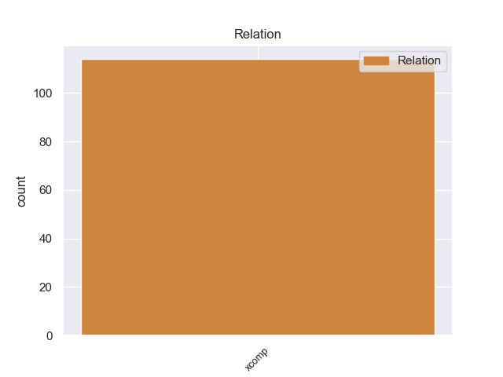
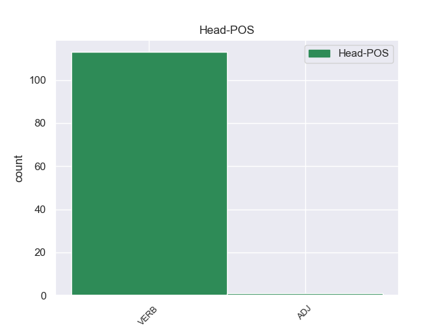
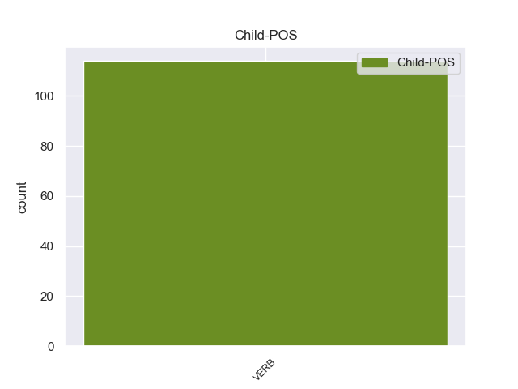

Distribution of features within this leaf



Morphosyntax Rules sorted by frequency.
- When the dependent token is the open clausal complement(xcomp) of the head token, and the dependent token is VERB, the Tense needs to be Past.
1 Molti _ _ _ _ 0 _ _ _
2 bambini _ _ _ _ 0 _ _ _
3 e _ _ _ _ 0 _ _ _
4 bambine _ _ _ _ 0 _ _ _
5 brasiliani _ _ _ _ 0 _ _ _
6 vivono vivere VERB V Mood=Ind|Number=Plur|Person=3|Tense=Pres|VerbForm=Fin 0 _ _ _
7 abbandonati abbandonare VERB V Gender=Masc|Number=Plur|Tense=Past|VerbForm=Part 6 xcomp 6:xcomp _
8 per _ _ _ _ 0 _ _ _
9 le _ _ _ _ 0 _ _ _
10 strade _ _ _ _ 0 _ _ _
11 e _ _ _ _ 0 _ _ _
12 non _ _ _ _ 0 _ _ _
13 vanno _ _ _ _ 0 _ _ _
14 a _ _ _ _ 0 _ _ _
15 scuola _ _ _ _ 0 _ _ _
16 . _ _ _ _ 0 _ _ _
non-conforming Examples:
1 Se _ _ _ _ 0 _ _ _
2 l' _ _ _ _ 0 _ _ _
3 usufrutto _ _ _ _ 0 _ _ _
4 è _ _ _ _ 0 _ _ _
5 stabilito _ _ _ _ 0 _ _ _
6 sopra _ _ _ _ 0 _ _ _
7 una _ _ _ _ 0 _ _ _
8 mandria _ _ _ _ 0 _ _ _
9 o _ _ _ _ 0 _ _ _
10 un _ _ _ _ 0 _ _ _
11 gregge _ _ _ _ 0 _ _ _
12 , _ _ _ _ 0 _ _ _
13 l' _ _ _ _ 0 _ _ _
14 usufruttuario _ _ _ _ 0 _ _ _
15 è _ _ _ _ 0 _ _ _
16 tenuto _ _ _ _ 0 _ _ _
17 a _ _ _ _ 0 _ _ _
18 surrogare _ _ _ _ 0 _ _ _
19 gli _ _ _ _ 0 _ _ _
20 animali _ _ _ _ 0 _ _ _
21 periti _ _ _ _ 0 _ _ _
22 , _ _ _ _ 0 _ _ _
23 fino _ _ _ _ 0 _ _ _
24 a _ _ _ _ 0 _ _ _
25 la _ _ _ _ 0 _ _ _
26 concorrente _ _ _ _ 0 _ _ _
27 quantità _ _ _ _ 0 _ _ _
28 di _ _ _ _ 0 _ _ _
29 i _ _ _ _ 0 _ _ _
30 nati _ _ _ _ 0 _ _ _
31 , _ _ _ _ 0 _ _ _
32 dopo _ _ _ _ 0 _ _ _
33 che _ _ _ _ 0 _ _ _
34 la _ _ _ _ 0 _ _ _
35 mandria _ _ _ _ 0 _ _ _
36 o _ _ _ _ 0 _ _ _
37 il _ _ _ _ 0 _ _ _
38 gregge _ _ _ _ 0 _ _ _
39 ha _ _ _ _ 0 _ _ _
40 cominciato cominciare VERB V Gender=Masc|Number=Sing|Tense=Past|VerbForm=Part 0 _ _ _
41 ad _ _ _ _ 0 _ _ _
42 essere _ _ _ _ 0 _ _ _
43 mancante mancare VERB V Number=Sing|Tense=Pres|VerbForm=Part 40 xcomp 40:xcomp _
44 di _ _ _ _ 0 _ _ _
45 il _ _ _ _ 0 _ _ _
46 numero _ _ _ _ 0 _ _ _
47 primitivo _ _ _ _ 0 _ _ _
48 . _ _ _ _ 0 _ _ _
1 E' _ _ _ _ 0 _ _ _
2 questa _ _ _ _ 0 _ _ _
3 l' _ _ _ _ 0 _ _ _
4 opinione _ _ _ _ 0 _ _ _
5 di _ _ _ _ 0 _ _ _
6 il _ _ _ _ 0 _ _ _
7 capogruppo _ _ _ _ 0 _ _ _
8 socialista _ _ _ _ 0 _ _ _
9 a _ _ _ _ 0 _ _ _
10 la _ _ _ _ 0 _ _ _
11 Camera _ _ _ _ 0 _ _ _
12 , _ _ _ _ 0 _ _ _
13 Nicola _ _ _ _ 0 _ _ _
14 Capria _ _ _ _ 0 _ _ _
15 , _ _ _ _ 0 _ _ _
16 che _ _ _ _ 0 _ _ _
17 giudica giudicare VERB V Mood=Ind|Number=Sing|Person=3|Tense=Pres|VerbForm=Fin 0 _ _ _
18 le _ _ _ _ 0 _ _ _
19 due _ _ _ _ 0 _ _ _
20 iniziative _ _ _ _ 0 _ _ _
21 « _ _ _ _ 0 _ _ _
22 oggettivamente _ _ _ _ 0 _ _ _
23 destabilizzanti destabilizzare VERB V Number=Plur|Tense=Pres|VerbForm=Part 17 xcomp 17:xcomp SpaceAfter=No
24 » _ _ _ _ 0 _ _ _
25 perché _ _ _ _ 0 _ _ _
26 « _ _ _ _ 0 _ _ _
27 difficilmente _ _ _ _ 0 _ _ _
28 possono _ _ _ _ 0 _ _ _
29 non _ _ _ _ 0 _ _ _
30 avere _ _ _ _ 0 _ _ _
31 come _ _ _ _ 0 _ _ _
32 bersaglio _ _ _ _ 0 _ _ _
33 il _ _ _ _ 0 _ _ _
34 governo _ _ _ _ 0 _ _ _
35 visto _ _ _ _ 0 _ _ _
36 che _ _ _ _ 0 _ _ _
37 tendono _ _ _ _ 0 _ _ _
38 a _ _ _ _ 0 _ _ _
39 corroder _ _ _ _ 0 _ _ _
40 ne _ _ _ _ 0 _ _ _
41 la _ _ _ _ 0 _ _ _
42 maggioranza _ _ _ _ 0 _ _ _
43 » _ _ _ _ 0 _ _ _
44 , _ _ _ _ 0 _ _ _
45 e _ _ _ _ 0 _ _ _
46 aggiunge _ _ _ _ 0 _ _ _
47 che _ _ _ _ 0 _ _ _
48 è _ _ _ _ 0 _ _ _
49 un _ _ _ _ 0 _ _ _
50 vizio _ _ _ _ 0 _ _ _
51 tipico _ _ _ _ 0 _ _ _
52 di _ _ _ _ 0 _ _ _
53 le _ _ _ _ 0 _ _ _
54 correnti _ _ _ _ 0 _ _ _
55 democristiane _ _ _ _ 0 _ _ _
56 trasferire _ _ _ _ 0 _ _ _
57 i _ _ _ _ 0 _ _ _
58 contrasti _ _ _ _ 0 _ _ _
59 interni _ _ _ _ 0 _ _ _
60 di _ _ _ _ 0 _ _ _
61 partito _ _ _ _ 0 _ _ _
62 su _ _ _ _ 0 _ _ _
63 il _ _ _ _ 0 _ _ _
64 terreno _ _ _ _ 0 _ _ _
65 di _ _ _ _ 0 _ _ _
66 le _ _ _ _ 0 _ _ _
67 istituzioni _ _ _ _ 0 _ _ _
68 . _ _ _ _ 0 _ _ _
1 L' _ _ _ _ 0 _ _ _
2 invalidità _ _ _ _ 0 _ _ _
3 o _ _ _ _ 0 _ _ _
4 l' _ _ _ _ 0 _ _ _
5 inefficacia _ _ _ _ 0 _ _ _
6 , _ _ _ _ 0 _ _ _
7 secondo _ _ _ _ 0 _ _ _
8 la _ _ _ _ 0 _ _ _
9 legge _ _ _ _ 0 _ _ _
10 applicabile _ _ _ _ 0 _ _ _
11 , _ _ _ _ 0 _ _ _
12 di _ _ _ _ 0 _ _ _
13 una _ _ _ _ 0 _ _ _
14 o _ _ _ _ 0 _ _ _
15 più _ _ _ _ 0 _ _ _
16 fra _ _ _ _ 0 _ _ _
17 le _ _ _ _ 0 _ _ _
18 disposizioni _ _ _ _ 0 _ _ _
19 di _ _ _ _ 0 _ _ _
20 la _ _ _ _ 0 _ _ _
21 presente _ _ _ _ 0 _ _ _
22 licenza _ _ _ _ 0 _ _ _
23 , _ _ _ _ 0 _ _ _
24 non _ _ _ _ 0 _ _ _
25 comporterà _ _ _ _ 0 _ _ _
26 l' _ _ _ _ 0 _ _ _
27 invalidità _ _ _ _ 0 _ _ _
28 o _ _ _ _ 0 _ _ _
29 l' _ _ _ _ 0 _ _ _
30 inefficacia _ _ _ _ 0 _ _ _
31 di _ _ _ _ 0 _ _ _
32 i _ _ _ _ 0 _ _ _
33 restanti _ _ _ _ 0 _ _ _
34 termini _ _ _ _ 0 _ _ _
35 e _ _ _ _ 0 _ _ _
36 , _ _ _ _ 0 _ _ _
37 senza _ _ _ _ 0 _ _ _
38 bisogno _ _ _ _ 0 _ _ _
39 di _ _ _ _ 0 _ _ _
40 ulteriori _ _ _ _ 0 _ _ _
41 azioni _ _ _ _ 0 _ _ _
42 di _ _ _ _ 0 _ _ _
43 le _ _ _ _ 0 _ _ _
44 parti _ _ _ _ 0 _ _ _
45 , _ _ _ _ 0 _ _ _
46 le _ _ _ _ 0 _ _ _
47 disposizioni _ _ _ _ 0 _ _ _
48 invalide _ _ _ _ 0 _ _ _
49 od _ _ _ _ 0 _ _ _
50 inefficaci _ _ _ _ 0 _ _ _
51 saranno _ _ _ _ 0 _ _ _
52 da _ _ _ _ 0 _ _ _
53 intender intendere VERB V VerbForm=Inf 0 _ _ _
54 si _ _ _ _ 0 _ _ _
55 rettificate rettificare VERB V Mood=Ind|Number=Plur|Person=2|Tense=Pres|VerbForm=Fin 53 xcomp 53:xcomp _
56 in _ _ _ _ 0 _ _ _
57 i _ _ _ _ 0 _ _ _
58 limiti _ _ _ _ 0 _ _ _
59 di _ _ _ _ 0 _ _ _
60 la _ _ _ _ 0 _ _ _
61 misura _ _ _ _ 0 _ _ _
62 che _ _ _ _ 0 _ _ _
63 sia _ _ _ _ 0 _ _ _
64 indispensabile _ _ _ _ 0 _ _ _
65 per _ _ _ _ 0 _ _ _
66 render _ _ _ _ 0 _ _ _
67 le _ _ _ _ 0 _ _ _
68 valide _ _ _ _ 0 _ _ _
69 ed _ _ _ _ 0 _ _ _
70 efficaci _ _ _ _ 0 _ _ _
71 . _ _ _ _ 0 _ _ _
1 La _ _ _ _ 0 _ _ _
2 Turchia _ _ _ _ 0 _ _ _
3 e _ _ _ _ 0 _ _ _
4 la _ _ _ _ 0 _ _ _
5 Thailandia _ _ _ _ 0 _ _ _
6 si _ _ _ _ 0 _ _ _
7 ritrovano ritrovare VERB V Mood=Ind|Number=Plur|Person=3|Tense=Pres|VerbForm=Fin 0 _ _ _
8 impantanate impantanare VERB V Mood=Ind|Number=Plur|Person=2|Tense=Pres|VerbForm=Fin 7 xcomp 7:xcomp _
9 in _ _ _ _ 0 _ _ _
10 una _ _ _ _ 0 _ _ _
11 crisi _ _ _ _ 0 _ _ _
12 politica _ _ _ _ 0 _ _ _
13 che _ _ _ _ 0 _ _ _
14 riflette _ _ _ _ 0 _ _ _
15 conflitti _ _ _ _ 0 _ _ _
16 interni _ _ _ _ 0 _ _ _
17 incubati _ _ _ _ 0 _ _ _
18 da _ _ _ _ 0 _ _ _
19 tempo _ _ _ _ 0 _ _ _
20 . _ _ _ _ 0 _ _ _
1 Pur _ _ _ _ 0 _ _ _
2 così _ _ _ _ 0 _ _ _
3 , _ _ _ _ 0 _ _ _
4 le _ _ _ _ 0 _ _ _
5 sue _ _ _ _ 0 _ _ _
6 prospettive _ _ _ _ 0 _ _ _
7 di _ _ _ _ 0 _ _ _
8 crescita _ _ _ _ 0 _ _ _
9 appaiono apparire VERB V Mood=Ind|Number=Plur|Person=3|Tense=Pres|VerbForm=Fin 0 _ _ _
10 vacillanti vacillare VERB V Number=Plur|Tense=Pres|VerbForm=Part 9 xcomp 9:xcomp SpaceAfter=No
11 , _ _ _ _ 0 _ _ _
12 e _ _ _ _ 0 _ _ _
13 questo _ _ _ _ 0 _ _ _
14 a _ _ _ _ 0 _ _ _
15 causa _ _ _ _ 0 _ _ _
16 di _ _ _ _ 0 _ _ _
17 il _ _ _ _ 0 _ _ _
18 galoppante _ _ _ _ 0 _ _ _
19 declino _ _ _ _ 0 _ _ _
20 di _ _ _ _ 0 _ _ _
21 la _ _ _ _ 0 _ _ _
22 sua _ _ _ _ 0 _ _ _
23 popolazione _ _ _ _ 0 _ _ _
24 in _ _ _ _ 0 _ _ _
25 età _ _ _ _ 0 _ _ _
26 lavorativa _ _ _ _ 0 _ _ _
27 , _ _ _ _ 0 _ _ _
28 destinata _ _ _ _ 0 _ _ _
29 a _ _ _ _ 0 _ _ _
30 diminuire _ _ _ _ 0 _ _ _
31 di _ _ _ _ 0 _ _ _
32 il _ _ _ _ 0 _ _ _
33 25 _ _ _ _ 0 _ _ _
34 % _ _ _ _ 0 _ _ _
35 entro _ _ _ _ 0 _ _ _
36 il _ _ _ _ 0 _ _ _
37 2050 _ _ _ _ 0 _ _ _
38 , _ _ _ _ 0 _ _ _
39 nonché _ _ _ _ 0 _ _ _
40 di _ _ _ _ 0 _ _ _
41 la _ _ _ _ 0 _ _ _
42 crescente _ _ _ _ 0 _ _ _
43 concorrenza _ _ _ _ 0 _ _ _
44 di _ _ _ _ 0 _ _ _
45 la _ _ _ _ 0 _ _ _
46 Cina _ _ _ _ 0 _ _ _
47 e _ _ _ _ 0 _ _ _
48 di _ _ _ _ 0 _ _ _
49 altre _ _ _ _ 0 _ _ _
50 economie _ _ _ _ 0 _ _ _
51 emergenti _ _ _ _ 0 _ _ _
52 . _ _ _ _ 0 _ _ _